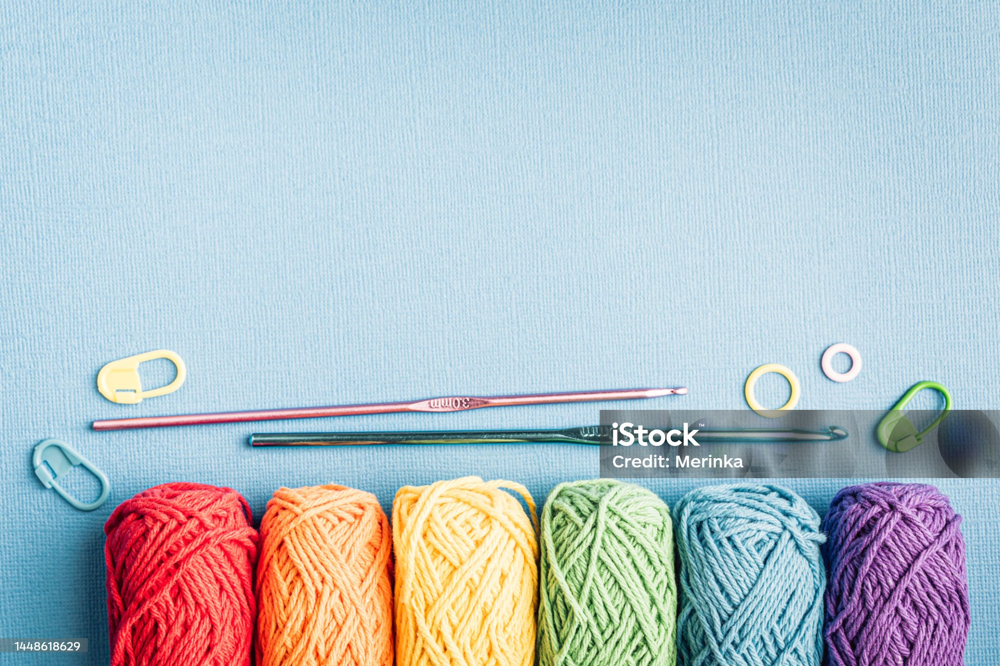
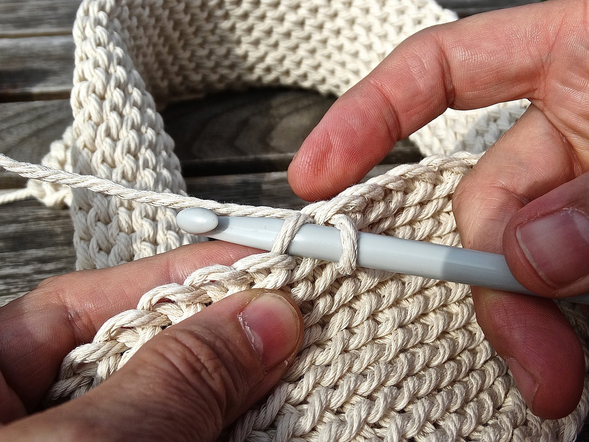

Crochet is a process of creating textiles by using a crochet hook to interlock loops of yarn, thread, or strands of other materials. The name is derived from the French term crochet, which means 'hook'. Hooks can be made from a variety of materials, such as metal, wood, bamboo, bone or even plastic.
(The hook, yarn, and scissors are technically enough to crochet, but stitch markers and a tapestry needle make a big difference)
The key difference between crochet and knitting, beyond the implements used for their production, is that each stitch in crochet is completed before the next one is begun, while knitting keeps many stitches open at a time.
